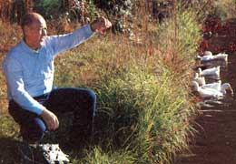

West Central Georgia
By Sara Pacher
January/February 1989
"BUT IT'S SO EMPTY!" I KEPT saying to myself.
That's an impression one would expect to receive from a far-western state-not when roller coastering up and down the well-maintained highways of these forest-covered foothills at the southern end of the Appalachians. Indeed, when in rural westcentral Georgia, it's often hard to believe that one of the nation's busiest airports, Atlanta's Hartsfield International, is a drive of just over an hour or so away and that you can be shopping in the huge malls that make up much of Georgia's second largest city, Columbus, in half that time.
In many areas of Troup, Meriwether, Harris and Talbot counties-which adjoin one another between the Chattahoochee and Flint rivers-you're as likely to encounter a wide-eyed deer, a bobcat or a flock of wild turkeys as another car. Wildlife is abundant here, including a few black bears and, it's said, even occasional pumas (often called swamp cats in these parts) that make their home in the more remote regions.
True, the woods now and then open to reveal the landscaped grounds of a sprawling factory that spews out trucks and cars during shift changes. Some sections, too, are heavily sprinkled with brick ranch-style homes as well as old "tenant houses" left over from another era. In contrast are modern architectural gems, often tucked out of sight on what would be called estates in other parts of the nation. But more impressive are the untold numbers of magnificent antebellum houses-some meticulously maintained and others in need of tender, loving renovation. The countryside is also dotted with many small towns and communities that have physically changed little in the last half century.
Even with all this, the feeling of emptiness and space is no illusion. It was not always so. In 1850, the fertile farming land of Talbot County, for example, supported 16,534 people and was among the highest-ranking cotton-growing regions in the state, but the Civil War changed all that. Fortunately, General Sherman by-passed this area on his fiery march from Atlanta to Savannah, sparing its many plantations from destruction if not from economic hardships. Though farmland here continued to provide raw material for the textile mills that later thrived in the other three counties, the boll weevil, the Great Depression and other economic factors altered the landscape. Despite a primarily clay-loam soil and a climate that can grow almost anything, row crops have largely disappeared to be replaced with timber, cattle, a few peach orchards and a little dairy farming. As the century progressed, city jobs lured people away. Today, Talbot's population is just over 6,000 and is still declining.
Likewise, while the state of Georgia grew by 2.1 million from 1950 to 1980, the population in Meriwether County rose by only 174 people, and in Troup by only 158. LaGrange (pop. 24,204), Troup's pleasant county seat and the largest town in the four counties, lost nearly 1,000 people during that time. Only Harris County-with its beautiful topography, its famous Callaway Gardens, its proximity to northward-expanding Columbus and its easy access to Atlanta, some 70 miles away on Interstate 185-gained over 4,000 people during that period and expects that many more by 1990.
While per capita income in these counties can't match Atlanta's (the fifth highest in the nation), personal incomes here have more than tripled since 1970. Even with Talbot's declining population, deposits at the People's Bank of Talbotton in the county seat (pop. 1,200) have risen from $8 million to $18 million in the last few years. And people in Harris County, looking at Atlanta's southwest expansion and Columbus heading north, laugh and say, "Pretty soon they're going to meet halfway." By the next century, that may not be a joke!
"Basically," said one long-time resident, "there are two ways of thinking here, and they are based on economics. Those who have their lives together want to keep things just as they are; those who don't, want change-any type of change-no matter what the cost. Both are wrong."
A Modern-Day Tara
There are many reminders of the past here whose value will be lost if not preserved, and one young man, out of his love for this area, has set about to save as much of its history as he personally can.
Ten years ago, when Mike Buckner was 25 years old, he bought a run-down Greek Revival house in Talbotton. Dismantling it and carefully numbering each piece, he moved the large structure 11 miles to the 250 acres he had inherited from his grandfather. A decade later, with Mike and his wife, Debbie, doing most of the work, their home, Patsiliga (a Creek Indian word meaning "Pigeon's Roost," because millions of now extinct passenger pigeons used to stop in this location during migration) sits in Tara-like splendor among towering pines.
"As it turns out, I'm glad we were forced to take our time," said Mike, a sixth generation native whose ancestors arrived when the Creeks left in 1825, "because, as we went along, materials from other old structures that were being torn down became available. The roof tiles for the wings and the bricks for the kitchen are from the old Talbotton depot. My great-grandfather, Gordon Parks, oversaw its construction in 1907."
Likewise, Mike can rattle off the local origins of every added plank and window, not to mention the original owners of the fine antiques that fill the rooms. These he inherited from an aunt who collected them for her antiques shop before moving to California in 1935. Of the few things not of local origin are the small prints lining the stairway. They did, however, grace Aunt Pittypat's stairway in Gone With the Wind. Mike's aunt purchased them when the movie's sets were auctioned off.
The "times past" that Mike and Debbie are so lovingly preserving extend far beyond the house. Their achievements are even more remarkable when you realize that these parents of two small boys-Joshua and John both hold down full-time jobs: he, as the postmaster of a tiny post office ("about the size of a car") in Rupert, 21 miles away; she, as a health educator for the district public health department in Columbus. They also rescue old log outbuildings-barns, smokehouses and the like-from area farms and rebuild them on their land.
"Someday," Mike said, "I'd like to turn some of them into cabins for weekend guests."
A short distance from the house, a 25-acre lake-in whose fish-filled waters Mike has created small islands as nesting places for migratory geese-provides the power for an old grist mill. There's been a mill on the site since 1840, and this one, built by Mike's great-grandfather and grandfather Fielder, has been turning out whole-wheat flour, grits and cornmeal since 1935. He started up the 25-horsepower mill to show me how it operated, but had to stop it to clean out the water intake valve.
"I bet the beavers have tried to close up the hole again," he said, but pulled out three big terrapins instead.
Mike took over the mill's operation when he was 14 years old-though just on weekends during his college days-and has loyal local and mail-order customers. In fact, as he was under the mills hauling out handfuls of terrapin, a customer arrived with her 90year-old mother, who admitted that they simply enjoy coming out to Patsiliga.
Much of the attraction lies in Buckner's innate graciousness. Polite ma'ams and sirs roll off Mike's tongue with all the ease of a New York cab driver's curses. And Buckner isn't unusual in this. In fact, such everyday good manners are more the rule than the exception in this part of the country and are among West Central Georgia's most attractive assets.
Living on the Fall Line
In addition to all their other projects, Mike keeps bees, and-"just for the fun of it"-grows sugar cane, which he plants and grinds in the old-fashioned way with the help of his "tractor," Big Max, a 1,700-pound steed that's part Belgian and part quarter horse. The Buckners' large garden thrives in this unique area of southern Talbot and Harris counties known as the Fall Line, for this was the shoreline of the ocean that covered large sections of the Southeast about five million years ago. Just a few miles to the north, the soil is heavily mixed with red clay, but here it's sandy loam. Not far away, near junction City (pop. 250), three companies mine what was once beach sand for use in construction, glass, computer chips and filters.
"This whole foothill area sits on what is called the crustaceous aquifer, a recharge system for southern Georgia and northern Florida," Mike explained. "The water of springs that boil up down there is actually from here. Our local wells come in at 50 feet or less. However, if you hit granite, you'll never come out of it, because you'll have hit the base of Atlanta's Stone Mountain.
"There are plants on the Fall Line that aren't found anywhere else," Mike told me. "A turkey oak, for example, that won't grow more than head-high in 100 years. There's a red honeysuckle, too, that blooms in August. But we don't have the otherwise common south Georgia gnats, or even many mosquitoes. The Fall Line is often called the 'Gnat Line.'
" As we checked on the fattening sugar cane, he continued, "I used to grow my own corn for the mill, too, but I can buy it cheaper than I can grow it. I still plant some, but the deer eat as much as we do."
In fact, most landowners here plant a few acres-sometimes as many as 20-in crops, such as millet for turkeys, to sustain wildlife. And, when the Georgia Power Company wanted to dam the Flint River, a favorite of canoeists, river-preserving activists stopped the project and brought about the creation of a 75,000-acre hunting preserve.
All this has helped to make Talbot County one of the best hunting areas in the Southeast. (If you intend to buy land here-and it can go as low as $500 an acre for large parcels-check on hunting and timber rights. You may not own them.)
Time Moves On
The dangers of the 20th century aren't unknown here, though. The day of my visit, Debbie Buckner was in Atlanta at a hearing on a toxic waste incinerator that might be built in next-door Taylor County, just six miles from the Buckner farm. A few folks think it would be an economic boon, but most residents have banded together in a mighty effort to prevent it, even trying to make Talbot's tiny Prattsburg community, which adjoins the contested area, into a historical site.
"Up to now, about the most dangerous thing we've had around here is someone's worn-out automobile battery," said Talbotton banker Gus Persons, "and we don't want to become someone else's garbage can. Should they decide to put the incinerator here, we'll put incredible restrictions on hauling the waste through Talbot County and tie them up in court for years."
And Talbot County faces another problem that everyone agrees has to be solved, but, in this case, no action is being taken.
Historically, the population in Talbot County has been more black than white. Historically, too, students living closer to schools in other counties have gone to those instead of traveling to the consolidated school system in Talbotton. But when integration was ordered, a great many white children began attending integrated but "better" schools in adjoining counties, so that, today, the Talbot County system is 99% black.
"Black or white, my job is to see that students receive the best education possible," said black county school superintendent John Terry. "We offer, as do all other Georgia schools, three courses of study: college prep, vocational and general education with stress on computer science. We have 44 computers in the school, more than the state average, and, under an IBM grant, we begin the Writing-to-Read program in kindergarten."
Remarkably, the Talbot schools have a high (97%) attendance rate and a low (1%) dropout rate.
Good, Better, Best
But if timeless Talbot is the most rural of the four counties with the least expensive land, Meriwether, Troup and Harris probably have more to offer. Meriwether's county seat of Greenville (pop. 1,213) has an incredible number of antebellum homes; one road leading out of town is lined with them. And the recent closing of the CSX railroad yards has made the bustling old mill town of Manchester (pop. 4,796) a buyer's market for houses. Meriwether is also home to Franklin D. Roosevelt's Little White House (now run by the state); the nearby Roosevelt Warm Springs Institute for Rehabilitation, where thousands once received treatment for polio in the 88°F waters, is still helping the severely physically disabled.
Four years ago, three Atlanta women bought up one side of the main street in the sleepy little town of Warm Springs (pop. 425) and opened some craft stores and a fine restaurant. Today, the town contains over 50 antiques stores and crafts shops and has become a major tourist attraction.
Other natural springs, though not warm ones, gurgle up elsewhere and were once health spas. Now, one, Cold Springs, is used as a state fish hatchery. The others, along with their long-gone guest houses and hotels, are no longer commercialized, as I discovered when I drove out to check on iron-rich Chalybeate Springs. I saw no sign of it, other than the small community by that name. Just beyond there, however, I discovered a valley of breathtaking beauty. Dan Herrema, from Michigan, and his wife, Linda, a Floridian, recently bought 50 acres in this area after living for a number of years in Atlanta's suburb of Marietta.
"At first we missed the culture, good wines and other amenities of city living," they told me. "But, lately, we go to Atlanta maybe once a month-and that's almost too much anymore."
Instead, they've enthusiastically joined the Pine Mountain Regional Arts Council. This organization's active guilds for theater, writing and arts and crafts bring together-both socially and for various projects-the many talented writers, actors and artists of Harris, Meriwether and Talbot counties.
LaGrange in Troup County offers quite a bit of culture itself, as well as an excellent medical center with more specialists per capita than any other city in Georgia. Furthermore, almost from its incorporation in 1828, the town has been a bastion for female rights. LaGrange College-coed since 1953, with a present enrollment of 1,000 students-was founded in 1831 as the LaGrange Female Academy, making it the oldest independent school in Georgia. It was also the first American women's college to offer an M.A. degree. (During the Civil War, the city of LaGrange had the only military company of women soldiers ever to be commissioned for duty on this continent.) Though LaGrange College's most popular degrees are now in business and computer science, it's long been known for turning out students superior in music, art and-particularly-drama. Its stock company performs at Callaway Gardens each summer.
Troup also contains the 25,900-acre West Point Lake with its many marinas, camping areas, swimming beaches, fishing piers and a 3,000-acre game preserve. Using locks, you can go by boat from here down the Chattahoochee River to the Gulf of Mexico.
But "if I had my druthers," as people around here say, I'd probably pick Harris County's little town of Pine Mountain (pop. 984) or nearby Pine Mountain Valley as nice places to live. The prime attraction is Callaway Gardens, a 14,000-acre, nonprofit botanical paradise built by LaGrange's Callaway family.
Harris County also offers the Franklin D. Roosevelt State Park, as well as spectacular views from Pine Mountain itself, a long ridge composed mostly of a quartzite that made it and neighboring ridges resistant to erosion.
On the top of one of these, Oak Mountain, Ed Hall, who works for a real estate company in Hamilton (pop. 506), Harris's county seat, is building a big glass and cedar home. "I've lived all over the world," he said, "but they say when you're born next to the Chattahoochee, you'll keep coming back. I once found attitudes here too provincial, and kept returning only to leave again, but that's changed now. I love it, and I intend to stay forever."
Similar feelings were repeated by the dozens of residents I met in these four counties, including people as diverse as native-born school superintendent John Terry and the newly arrived Herremas. It was perhaps most forcefully expressed by Pine Mountain's Ray Sheppard, one of Georgia's three private consultants in the management of lakes, timber and game, who enjoys his job as much as anyone I've ever met.
"This is just a super, super place to live," he said. "I'd change professions before I'd leave."
|
by Drew Leviton It's a land of cattle and pecan trees; lovely, old antebellum homes; and quiet canoe rides on the Flint River. |
by Drew Leviton Millers Mike and Josh Buckner. |
by Drew Leviton a hay bus on Pobiddy Road in Talbot County. |
|
by Drew Leviton Lake and woods consultant Ray Sherman would rather change careers than leave much-loved Pine Mountain. |
by Drew Leviton Left: a homestead of bygone days. Right: John Terry at Talbot's Central High School. |
 by Drew Leviton A Day Center butterfly. |
 by Drew Leviton Some of President Franklin D. Roosevelt's happiest days were spent at the Little White House in Warm Springs. Here, he received treatment for polio in the 88°F waters and built a model farming community in nearby Pine Mountain Valley-and it was here that he died. |
by Drew Leviton |
|